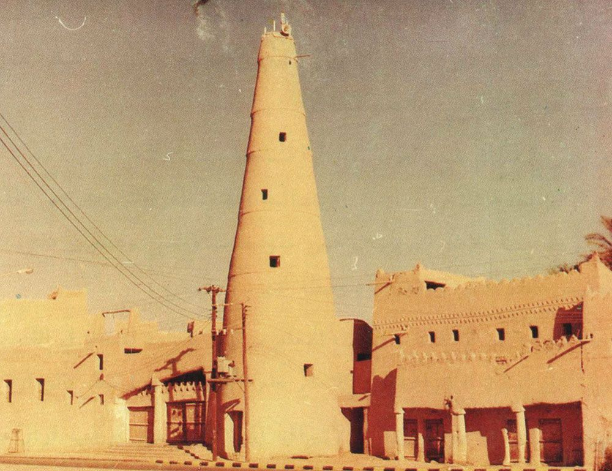

إرث... صحيفة تربط الإنسان بجذوره
نافذة صحفية ثقافية تعيد قراءة التاريخ والآثار والسياحة في المملكة العربية السعودية بأسلوبٍ معاصر يجمع بين العمق المعرفي والسرد البصري.
نافذة صحفية ثقافية تعيد قراءة التاريخ والآثار والسياحة في المملكة العربية السعودية بأسلوبٍ معاصر يجمع بين العمق المعرفي والسرد البصري.
رصد يومي للمشهد الثقافي والسياحي والتراثي في المملكة العربية السعودية، بمعالجة صحفية رشيقة وموثوقة.
 خبر رئيسي
خبر رئيسي
مشهد عمراني يستعيد ملامحه الأصيلة في حيّ الطريف، ويعيد تعريف العلاقة بين الحجر والإنسان في عاصمة الدولة السعودية الأولى.

ملفات صحفية متأنّية تتناول الوجهات والمشاريع الثقافية بعمق توثيقي وتحليلي، نقدّمها للقارئ الذي يبحث عن المعنى خلف الخبر.
ملفات استقصائية معمّقة تطرح الأسئلة الكبرى وتفتح نقاشات جوهرية حول التراث والهوية والتحوّلات المعاصرة.

سؤالٌ مفتوح يتحرّك بين التوثيق الرقمي والذاكرة الإنسانية، نطرحه على المختصين والممارسين والزوار في رحلة بحثية تمتدّ من المتاحف الافتراضية إلى أزقّة المواقع الأثرية.

قراءة في حكاية معلَم ديني وعمراني يحتل مكانة خاصة في وجدان أهل القصيم، نُفكّك فيها الرواية المتوارثة من خلال الوثائق والشهادات الحيّة.
أصوات تكتب عن المكان كما تعيشه، وعن التراث كما تشعر به، في مساحات رأي حرّة ومسؤولة.
تأمّلٌ في معنى المدينة المنورة في الوجدان، وكيف تتجاوز جغرافيتها لتصبح حالة شعورية تستوطن القلب قبل المكان.
اقرأ المقال ←قرية حجرية تنام على كتف الجبل، وتروي حكايتها للزائر بصبر الحجارة وألفة المكان الذي لا يُغلق بابه.
اقرأ المقال ←المكان الذي يجعل الزمن متحفًا مفتوحًا، حيث تتحدّث الواجهات الصخرية بلغةٍ لا تتقادم.
اقرأ المقال ←البحر، الحجارة، القصص، والصمت. أربعة أوجه لجزر تروي ذاكرة جنوب المملكة لمن يُحسن الإصغاء.
اقرأ المقال ←مقابلات حصرية مع رجالات العلم والثقافة، نقترب فيها من ذاكرة المكان وأثر الإنسان.
مساحة إبداعية داخل صحيفة إرث، نكتب فيها عن المكان والإنسان والذاكرة بأسلوبٍ صحفيٍّ إبداعيّ، يُبرز المناطق السياحية والأثرية في المملكة العربية السعودية بروح سرديّة تحفظ أثر المكان في وجدان القارئ.
ادخل المساحة الإبداعيةأن تكون صحيفة إرث مرجعًا وطنيًا للصحافة الثقافية في المملكة العربية السعودية، ومنصة رائدة في توثيق الذاكرة التاريخية والحضارية، تسهم في تعزيز حضور التراث السعودي محليًا وعالميًا.
تقديم نموذج صحفي معاصر يعيد قراءة الماضي بعيون الحاضر، ويربط بين الإنسان والمكان في إطار ثقافي وسياحي متوازن، مع الالتزام بالمصداقية والعمق في الطرح، وتوظيف اللغة الراقية والتصميم البصري لإيصال المعرفة بأسلوب مؤثر.
«ربط الإنسان بجذوره»
إنتاجات صحفية مرئية تنقل القصص الثقافية بأسلوب بصري مميز.